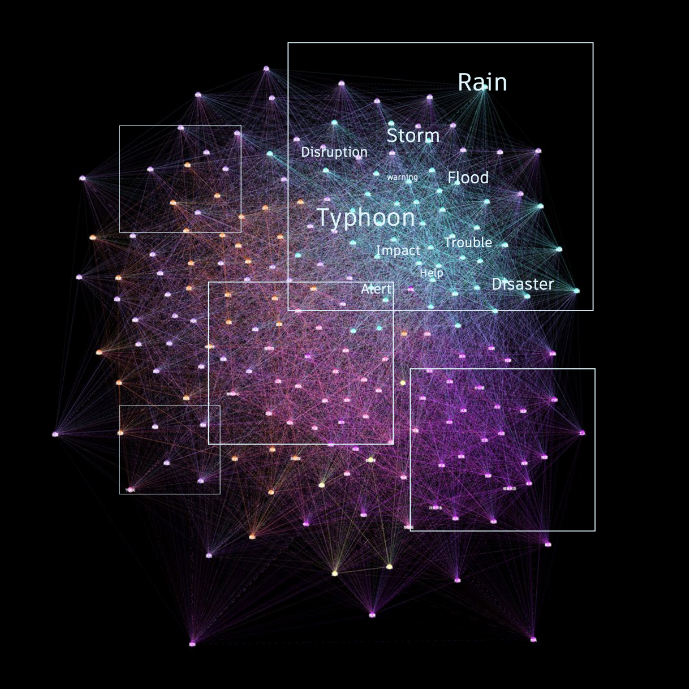
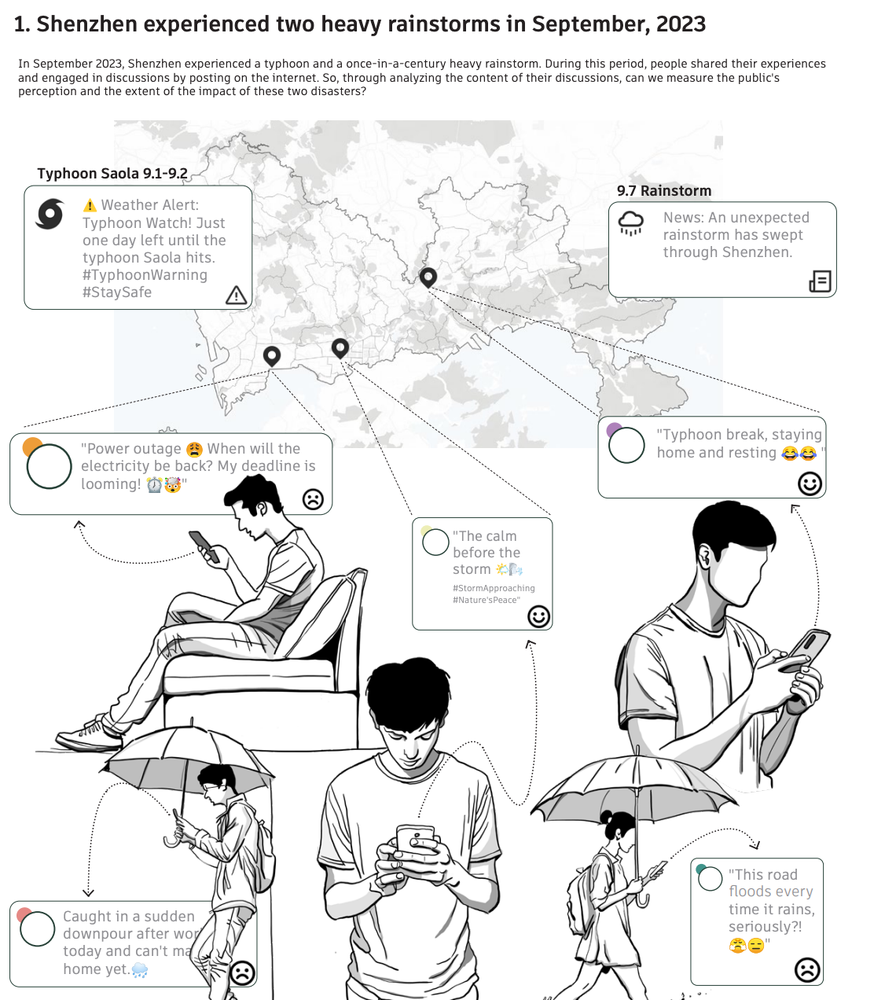
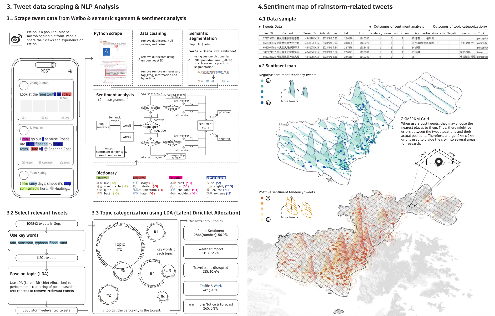
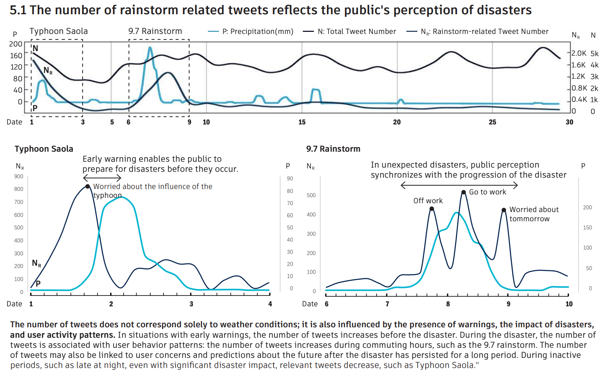
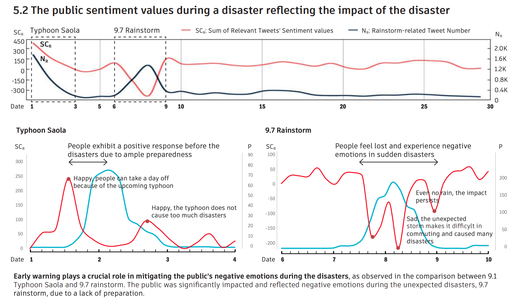
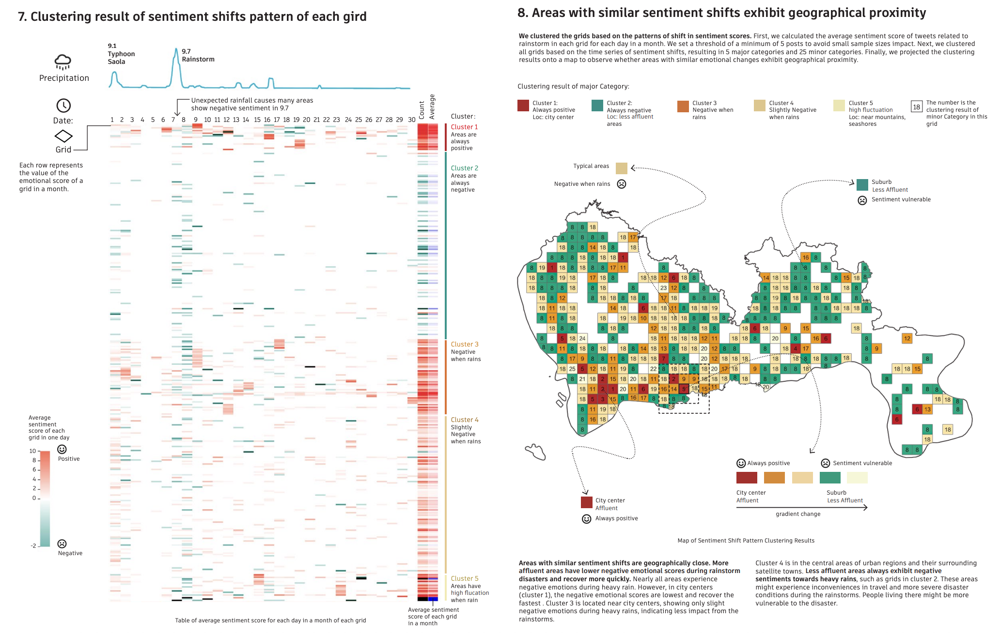
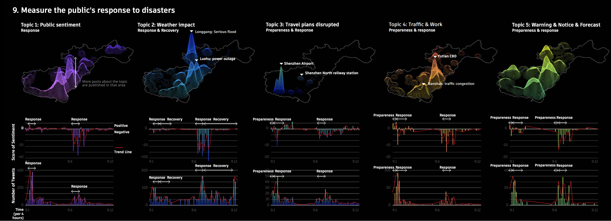
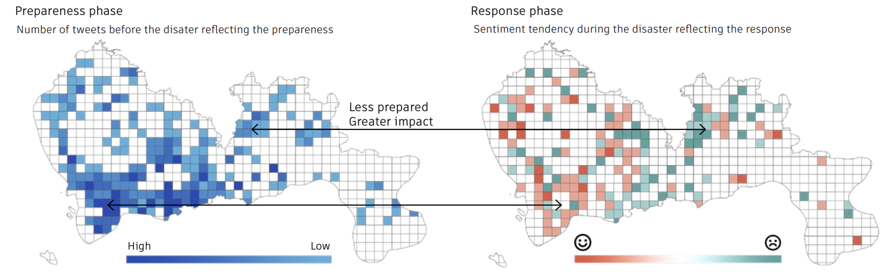
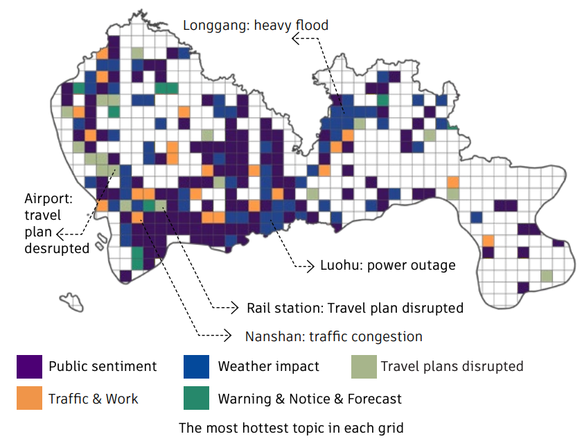

项目简介：受“公民即传感器”理念的启发，我们尝试利用微博数据来衡量公众对灾害的感知。城市应对灾害的过程分为四个阶段：防灾、应急、恢复和减灾。我们的目标是探究微博数据是否能反映这四个过程，以及它们与城市空间之间的关联。2023年9月初，深圳遭遇台风和暴雨，对民众生活造成了重大影响。我们从微博收集推文数据，并筛选出与风暴相关的推文进行分析。通过自然语言处理（NLP）情感分析计算每条推文的情感评分，并按主题进行分类。随后，我们分析了不同区域内情感及主题变化的规律。研究发现，推文数据的数量和情感评分反映了公众对灾害的感知及其影响。情感变化相似的区域在地理上往往相邻，且在灾害期间，经济欠发达地区的情感波动更为显著。不同地区在灾害发生前对风暴预警信息的获取存在差异，导致某些地区（尤其是经济欠发达地区）受暴雨影响加剧。本研究有助于城市规划者利用推文数据理解公众对灾害的反应，并制定提升城市韧性的策略。

微博话题数据可视化
深圳2023年9月遭遇了2次极端暴雨天气，分别是9.2的台风和9.7的突发暴雨。

我们对获取的9月份深圳的数十万条微博数据进行处理：根据关键词计算微博文字中隐含的情绪信息，判断微博积极/消极的得分，然后使用非监督学习的LDA算法进行对微博进行话题分类。数据分析阶段，我们研究了9月份微博数据的数量变化和情绪变化，以测度社交媒体感知和暴雨的关系。然后我们分话题进行更细节的研究。
研究框架

数据处理过程
下图展示了讨论暴雨话题的帖子数量与降雨量之间的对应关系。我们发现9.2台风和9.7暴雨呈现不一样的模式：9.2台风帖子数量的峰值在降雨峰值之前（下图左），而9.7暴雨帖子数量的峰值与降雨峰值对应。这是因为台风有提前的预警，所以在降雨量达到峰值之前，关于暴雨的讨论就已经达到了峰值，且降雨峰值发生在深夜，因此发帖子的人少。反之，9.7暴雨是突发性，且发生时间刚好在上下班高峰。因此，帖子数量能够在一定程度上反映公众对暴雨的感知，但其变化也受到作息时间、预警机制以及降雨发生时段等社会行为因素的影响。

通过计算帖子的平均情绪指数可以反映公众对灾害的评价。让人惊艳的是，暴雨并非一定带来消极的情绪：在9.2台风中，人们的情绪偏向积极——在暴雨之前，人们感到开心因为明天可以不用上班，在暴雨之后，人们感到开心，因为台风比较温柔，没有造成太多的伤害。在9.7暴雨中，人们的情绪表现消极——因为暴雨发生在上下班通勤的时间段，因为水灾很多人通勤受阻，有的人则担心无法购买食物和点外卖。因此，通过计算帖子的情绪指数，我们可以评价灾害对公众的影响程度，而对灾害的提前预警可以让公众做好充足准备，从而显著减轻公众在灾害中的消极情绪。

对每个网格的情绪变化进行聚类分析，一共分为五类：一直积极（红色）、一直消极（绿色）、下雨的时候消极（橙色）、下雨的时候轻微消极（黄色）、一直波动。研究发现：相邻的地方一半具有相同的情绪变化模式，市中心的情绪一直保持积极，而市郊则一直保持消极。因为市中心的基建更好，收到暴雨影响少，且市中心居住的人群较为富裕，面对突发天气可以选择更加松弛的态度，选择休息，而不用担心上班赚钱的生存压力。这体现了城市在遭遇灾害的时候，不同阶层的人的感知和受伤程度是不同的。一些地方在下雨的时候表现消极，因为当地基础设施应对暴雨洪水能力差，导致水灾阻碍通勤。通过对情绪变化的分析，我们可以更好了解哪些地方需要提升，哪些群体的需求需要被关照。

本研究将城市应对灾害的过程划分为准备、响应、恢复和缓解四个阶段，并利用与暴雨相关的社交媒体帖子来反映公众在不同阶段的感知与反应。通过降雨发生情况区分响应阶段与前后的准备和恢复阶段。基于LDA主题模型，将帖子划分为公众情绪、天气影响、出行受阻、交通与工作以及预警信息等五类主题。结果表明，灾害前以预警信息讨论为主，反映准备阶段；灾害发生时，交通、出行和公众情绪等主题显著增加，体现灾害对居民生活的直接影响；灾害后关于天气影响的持续讨论则反映了恢复阶段。同时，不同地区在灾前预警信息量上的差异，也会影响灾害期间公众情绪与实际受灾程度。

每个讨论话题的地理分布和时序分布

充足准备的地方受灾轻

每个地方最火的讨论主题
本研究仍存在一定局限。首先，社交媒体用户无法完全代表整体人口结构，因此数据样本在代表性上存在偏差。其次，本研究的样本规模相对有限，若能在更长时间尺度上持续收集和分析数据，可能获得更加稳定和准确的结果。此外，部分帖子中包含隐含或语境化的表达，当前方法难以完全识别其真实含义，这也可能对分析结果产生一定影响。
Project Overview: Inspired by the concept of “citizens as sensors,” we sought to use Weibo data to measure public perception of disasters. The urban disaster response process consists of four stages: disaster prevention, emergency response, recovery, and disaster mitigation. Our goal was to investigate whether Weibo data could reflect these four stages and their relationship to the urban landscape. In early September 2023, Shenzhen was hit by a typhoon and heavy rains, which had a significant impact on residents’ lives. We collected Weibo post data and filtered out storm-related posts for analysis. Using natural language processing (NLP) sentiment analysis, we calculated a sentiment score for each post and categorized them by topic. Subsequently, we analyzed patterns in sentiment and topic changes across different regions.
The study found that the volume of Weibo posts and their sentiment scores reflected the public’s perception of the disaster and its impact. Regions with similar emotional trends were often geographically adjacent, and during the disaster, emotional fluctuations were more pronounced in economically underdeveloped areas. Differences in access to storm warning information prior to the disaster across regions led to certain areas—particularly economically underdeveloped ones—being more severely affected by the torrential rains. This study helps urban planners utilize Weibo data to understand public reactions to disasters and formulate strategies to enhance urban resilience.
Visualization of Weibo Data
Shenzhen experienced two episodes of extreme rainfall in September 2023: a typhoon on September 2 and a sudden downpour on September 7.
We processed hundreds of thousands of Weibo posts from Shenzhen collected in September: we calculated the sentiment embedded in the text based on keywords to determine whether each post was positive or negative, and then used the unsupervised LDA algorithm to classify the posts by topic. During the data analysis phase, we examined changes in the volume and sentiment of Weibo posts in September to assess the relationship between social media sentiment and the heavy rainfall. We then conducted a more detailed analysis by topic.
Research Framework
Data Processing
The number of posts reflects the public's perception of the heavy rain
The figure below illustrates the correlation between the number of posts discussing heavy rain and the amount of rainfall. We found that Typhoon 9.2 and the heavy rain event on September 7 exhibited different patterns: the peak in the number of posts regarding Typhoon 9.2 occurred before the peak in rainfall (left side of the figure), whereas the peak in the number of posts regarding the September 7 heavy rain event coincided with the peak in rainfall. This is because typhoons are accompanied by advance warnings, so discussions about the heavy rain had already peaked before the rainfall reached its peak. Additionally, since the peak rainfall occurred late at night, there were fewer people posting online. Conversely, the September 7 downpour was sudden and occurred precisely during the morning and evening rush hours. Therefore, while the number of posts can to some extent reflect the public’s perception of the downpour, its fluctuations are also influenced by social behavioral factors such as daily routines, early warning mechanisms, and the timing of the rainfall.
Changes in the tone of posts reflect the public's experience of the disaster
Calculating the average sentiment score of posts can reflect the public’s assessment of a disaster. Surprisingly, heavy rain does not necessarily trigger negative emotions: During Typhoon 9.2, people’s sentiments leaned toward the positive—before the downpour, people were happy because they didn’t have to go to work the next day; after the downpour, people were happy because the typhoon was relatively mild and did not cause significant damage. During the September 7 downpour, however, people’s sentiments were negative—because the rain fell during the morning and evening commute, flooding disrupted many people’s commutes, and some worried about being unable to buy food or order takeout. Therefore, by calculating the sentiment index of posts, we can assess the extent of a disaster’s impact on the public, and early warnings can help the public prepare adequately, thereby significantly reducing negative emotions during the disaster.
Patterns of emotional change exhibit geographical proximity
A cluster analysis of emotional changes across each grid cell identified five categories: consistently positive (red), consistently negative (green), negative during rain (orange), slightly negative during rain (yellow), and consistently fluctuating. The study found that adjacent areas share the same sentiment pattern half the time. Sentiment in the city center remained consistently positive, while sentiment in the suburbs remained consistently negative. This is because the city center has better infrastructure and is less affected by heavy rain. Additionally, the population in the city center is relatively affluent, allowing them to adopt a more relaxed attitude toward sudden weather events—choosing to rest rather than worrying about the survival pressure of going to work to earn a living. This demonstrates that when a city faces a disaster, the perceptions and the extent of harm experienced by people from different socioeconomic classes differ. Some areas exhibited negative sentiment during rainfall because their infrastructure was poorly equipped to handle heavy rain and flooding, leading to commuting disruptions caused by flooding. By analyzing these emotional shifts, we can better identify which areas require improvement and which groups’ needs require attention.
Changes in Discussion Topics
This study divides the urban disaster response process into four phases: preparation, response, recovery, and mitigation, and utilizes social media posts related to heavy rainfall to reflect public perceptions and reactions during each phase. The response phase is distinguished from the preceding preparation and subsequent recovery phases based on rainfall events. Using an LDA topic model, the posts were categorized into five thematic groups: public sentiment, weather impacts, travel disruptions, transportation and work, and early warning information. The results indicate that discussions prior to the disaster were dominated by early warning information, reflecting the preparation stage. During the disaster, themes such as transportation, travel, and public sentiment increased significantly, illustrating the direct impact of the disaster on residents’ lives. The continued discussion of weather impacts after the disaster reflects the recovery stage. Additionally, differences in the volume of early warning information across regions prior to the disaster also influence public sentiment and the actual severity of damage during the disaster.
Geographical and temporal distribution of each discussion topic
Areas that were well-prepared suffered less damage
The hottest topics of discussion in each region
This study has certain limitations. First, social media users do not fully represent the overall population, resulting in a lack of representativeness in the data sample. Second, the sample size of this study is relatively limited; if data could be collected and analyzed continuously over a longer period, more stable and accurate results might be obtained. Furthermore, some posts contain implicit or contextual expressions, and current methods struggle to fully discern their true meaning, which may also have some impact on the analysis results.